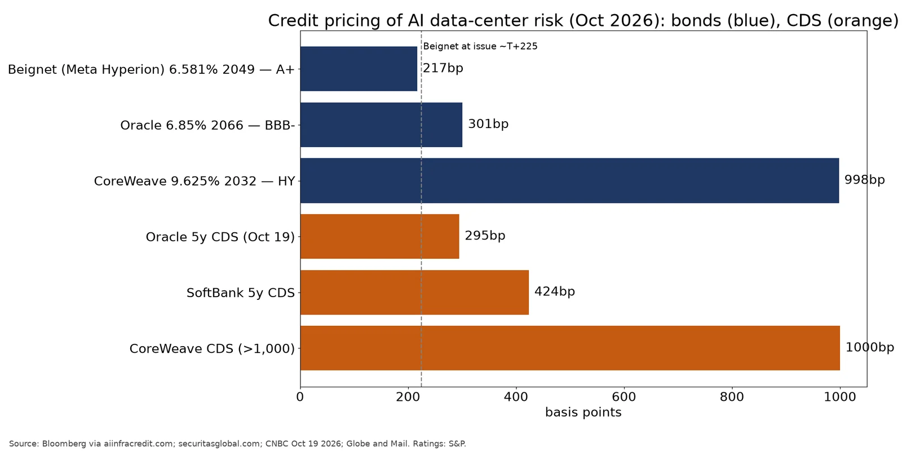

Q5. Credit Stress

- Stress is showing at the weakest borrowers. Oracle's 5-year CDS hit a record 288bp on Oct 15 and 295bp on Oct 19, and S&P cut Oracle to BBB- in July. CoreWeave's CDS is above 1,000bp, and its 2032 bonds trade near 77c. (source)
- The SPV bonds rest on leases with short initial terms (El Paso: 4 years plus extensions) that are rated off the tenant's credit and the RVG, not on the asset itself. S&P noted that Beignet lenders lack direct security over the joint-venture assets. (source)
- The market is already pricing in some risk. Beignet notes fell to about 91c (about 7.55% yield, roughly 230bp over Treasuries) from par, and spreads peaked at 255bp in July. Investors are treating an 'A+' bond with a wider spread than its rating implies. (source)
- Concentration: OpenAI accounts for about half of Oracle's $664B RPO. Oracle's Q1 FY27 free cash flow excluding customer prepayments was –$16.8B, and $19.9B of new stock helped fund its capex. (source)
- The ultimate obligors are AA-rated, cash-rich hyperscalers (Meta, Microsoft, Alphabet, Amazon). The RVGs and leases are their own obligations, and Beignet still trades at only about 217bp G-spread, nowhere near high-yield levels. (source)
Source: Bloomberg via aiinfracredit.com; securitasglobal.com; CNBC Oct 19 2026; Globe and Mail. Ratings: S&P.
https://www.aiinfracredit.com/en/research/which-ai-debt-is-repricing https://www.securitasglobal.com/risk-perspectives/oracle-cds-record-288-basis-points-ai-debt/ https://www.cnbc.com/2026/10/19/oracle-debt-faces-an-ai-stress-test-why-some-investors-arent-worried-.html https://www.theglobeandmail.com/investing/article-are-ai-credit-cracks-a-warning-or-a-buy-signal/
Assessment: hyperscaler-backed SPV paper (Meta, Microsoft) is investment-grade credit whose real risk depends on the RVG and the decision to renew. The genuinely junk-like layer is Oracle-linked Stargate partner debt and neocloud/miner secured notes, where spreads (CoreWeave about 1,000bp) and CDS already signal high-yield risk. Watch Oracle CDS above 300bp, the hyperscaler 10-Qs due Oct 28–29 ET, and any lease non-renewals.